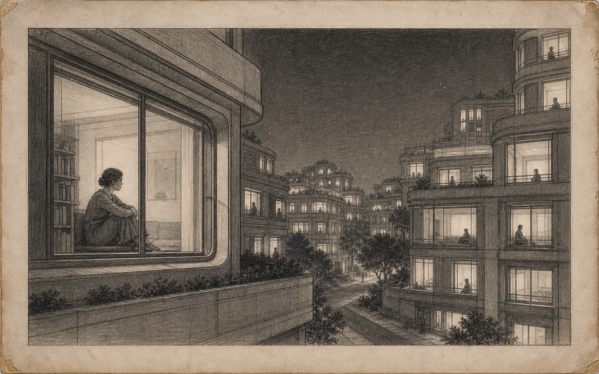

ARCHIVE PLATE 01
BEFORE N-01
Problem recorded: isolation
BEFORE N-01
Problem recorded: isolation
Recovered Plate 01
Before the Neural Ring
Grey Star had everything they needed. Except a reliable way to reach each other.
The earliest records do not describe scarcity. They describe citizens surrounded by systems of care, still unable to make their loneliness legible.